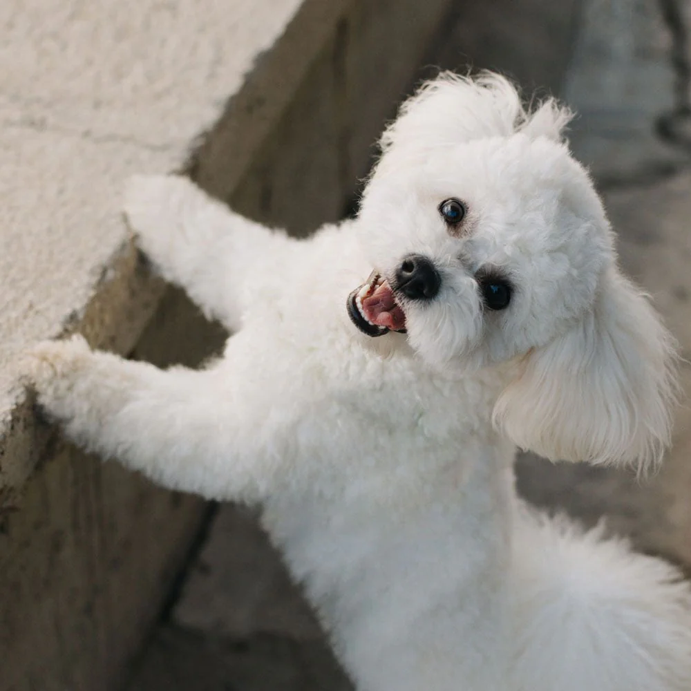
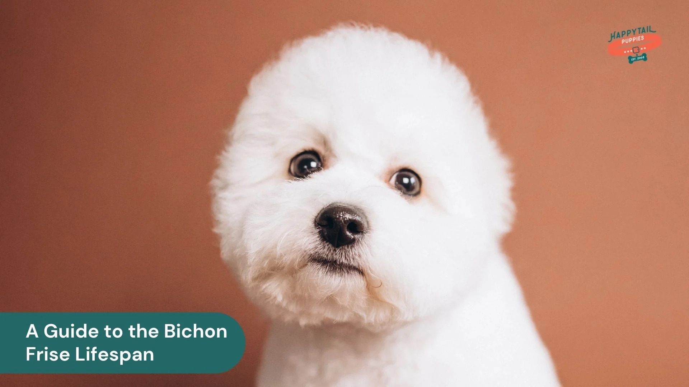
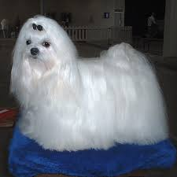
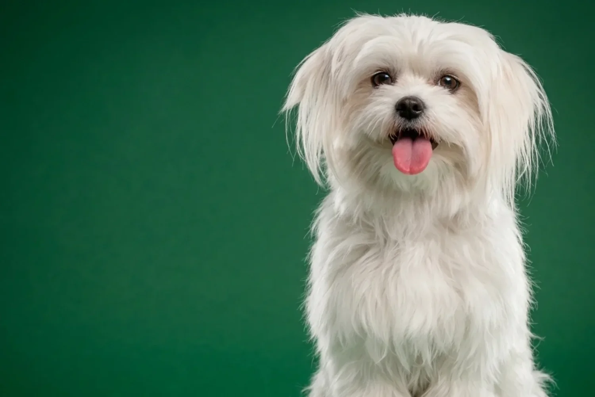
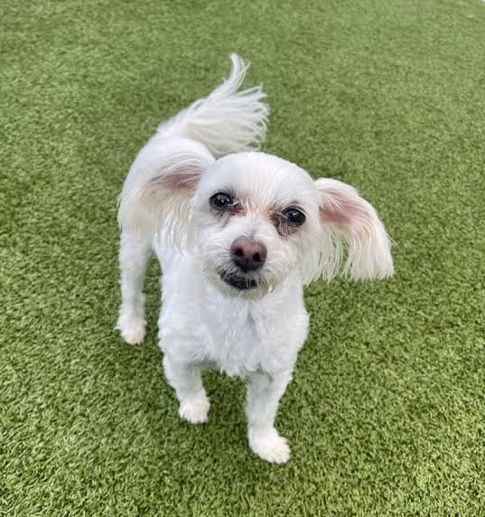

The small but sturdy and resilient Bichon Frise stands among the world's great 'personality dogs.' Since antiquity, these
irresistible canine comedians have relied on charm, beauty, and intelligence to weather history's ups and downs. A good-size Bichon
will stand a shade under a foot tall at the shoulder. The breed's glory is a white hypoallergenic coat, plush and
velvety to the touch, featuring rounded head hair that sets off the large, dark eyes and black leathers of the nose and lips.
Bichons are adaptable companions who get on well with other dogs and children. Alert and curious, Bichons make nice little
watchdogs'¿but they are lovers, not fighters, and operate under the assumption that there are no strangers, just friends they
haven't met yet.


The tiny Maltese, 'Ye Ancient Dogge of Malta,' has been sitting in the lap of luxury since the Bible was a work in progress.
Famous for their show-stopping, floor-length coat, Maltese are playful, charming, and adaptable toy companions.
Maltese are affectionate toy dogs weighing less than seven pounds, covered by a long, straight, silky coat. Beneath the all-white mantle
is a compact body moving with a smooth and effortless gait. The overall picture depicts free-flowing elegance and balance.
The irresistible Maltese face' with its big, dark eyes and black gumdrop nose' can conquer the most jaded sensibility. Despite
their aristocratic bearing, Maltese are hardy and adaptable pets. They make alert watchdogs who are fearless in a charming toy-dog
way, and they are game little athletes on the agility course. Maltese are low-shedding, long-lived, and happy to make new friends of
all ages. Sometimes stubborn and willful, they respond well to rewards-based training.


